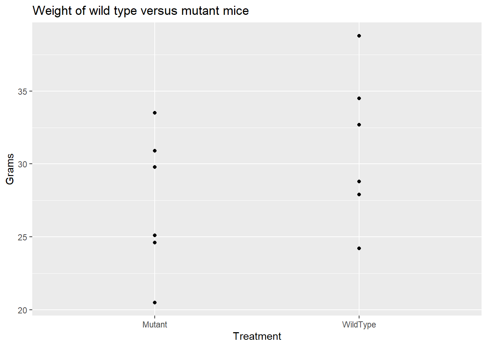
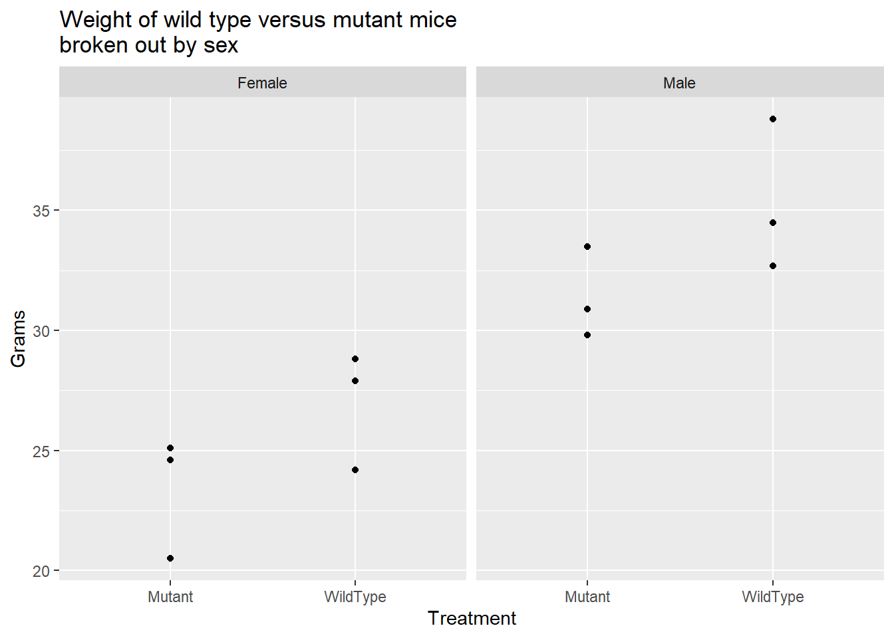
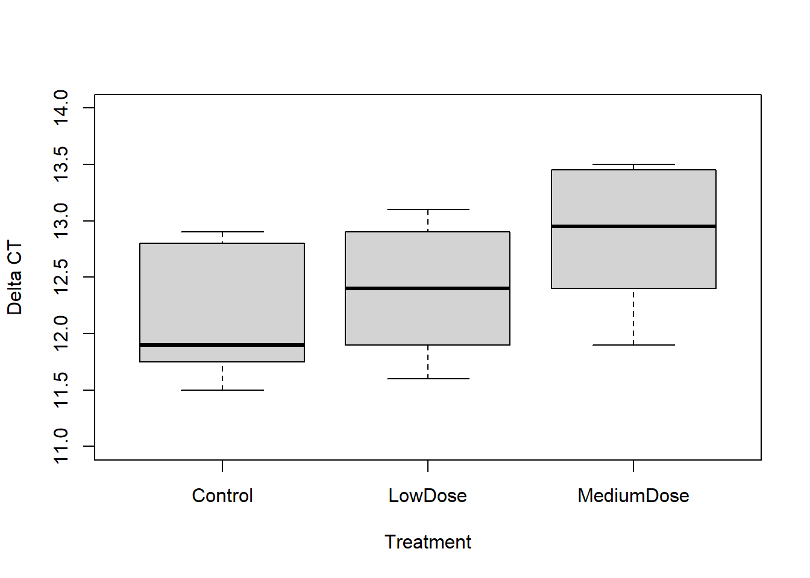
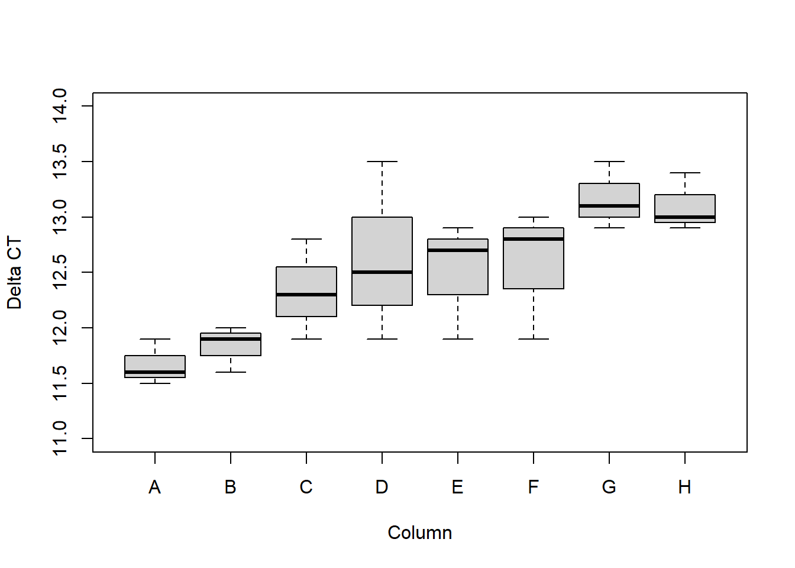

library(tidyverse) # For graphs and data manipulation
mutation.weight.data = tibble::tribble(
~Treatment, ~Sex, ~Grams,
"WildType", "Female", 24.2,
"WildType", "Female", 27.9,
"WildType", "Female", 28.8,
"WildType", "Male", 32.7,
"WildType", "Male", 34.5,
"WildType", "Male", 38.8,
"Mutant", "Female", 20.5,
"Mutant", "Female", 24.6,
"Mutant", "Female", 25.1,
"Mutant", "Male", 29.8,
"Mutant", "Male", 30.9,
"Mutant", "Male", 33.5
)1 Avoid t-tests: Control for variables using multiple regression or ANOVA
If you want p < 0.05 with the minimum sample size and minimum effort, use multiple regression or analysis of variance (ANOVA) instead of t-tests. T-tests only let you test the effect of one treatment variable. This is a problem, because often more than one variable affects the response. The added variability in the response caused by those other variables makes it harder to detect the effect of the one variable you are interested in. T-tests do not let you control for the other variables that affect the response.
Think of it as a signal to noise problem: if you are in a noisy room, it is hard to hear what a person is saying. That is the t-test version. Multiple regression and ANOVA remove the noise, and let you detect the signal.
The following short story illustrates why you should avoid t-tests. It is based on actual events.
1.1 Short story: Of mice and marriage
A post-doc, whom we’ll call John, was having problems with his experiment. John was studying mice in which he genetically modified a gene he thought might be related to weight. For his experiment, he created knock-out mutant mice that lacked the gene. Then he measured the difference in weight between 24-week-old wild type mice and 24-week-old mutant mice.
Creating the knock-out mice was difficult and time consuming. After almost a year working on his post-doc, his data looked like this.
# Create the plot “Weight of wild type versus mutant mice”.
ggplot(mutation.weight.data, aes(y=Grams, x=Treatment)) + geom_point() +
ggtitle("Weight of wild type versus mutant mice") 
John tried a t-test for the difference in weight between the mutations and wild type. Here is the R code to run the t-test. The notation “Grams ~ Treatment” is the formula that specifies Grams is the response (y) variable and Treatment is the explanatory (x) variable.
t.test(Grams ~ Treatment, var.equal=TRUE, data = mutation.weight.data)
Two Sample t-test
data: Grams by Treatment
t = -1.2926, df = 10, p-value = 0.2252
alternative hypothesis: true difference in means between group Mutant and group WildType is not equal to 0
95 percent confidence interval:
-10.214099 2.714099
sample estimates:
mean in group Mutant mean in group WildType
27.40 31.15 The p-value is not significant, p = 0.2252.
Equivalently, you can do the t-test analysis using the R function lm(), which performs a linear regression. Notice the same formula, “Grams ~ Treatment”. In the lm output, the p-value of 0.225 is in the row labeled “TreatmentWildType” in the column labeled “Pr(>|t|).
summary(lm(Grams ~ Treatment, data = mutation.weight.data))
Call:
lm(formula = Grams ~ Treatment, data = mutation.weight.data)
Residuals:
Min 1Q Median 3Q Max
-6.950 -2.913 -0.375 3.388 7.650
Coefficients:
Estimate Std. Error t value Pr(>|t|)
(Intercept) 27.400 2.051 13.357 1.06e-07 ***
TreatmentWildType 3.750 2.901 1.293 0.225
---
Signif. codes: 0 '***' 0.001 '**' 0.01 '*' 0.05 '.' 0.1 ' ' 1
Residual standard error: 5.025 on 10 degrees of freedom
Multiple R-squared: 0.1432, Adjusted R-squared: 0.05748
F-statistic: 1.671 on 1 and 10 DF, p-value: 0.2252The t-test and the linear regression both indicate that treatment is not significant, p = 0.2252. We get the same p-value using either the t.test or the lm function.
John was afraid that his academic research career might be coming to an end. Without positive results from his experiment, he couldn’t publish and couldn’t get a faculty position.
But John believed there was a difference between the mutation and wild type mice. When he plotted his data separately for males and females, he saw a big difference between males and females.
# Create the plot “Weight of wild type versus mutant mice broken out by sex”.
ggplot(mutation.weight.data, aes(y=Grams, x=Treatment)) + geom_point() +
facet_wrap(~Sex) +
ggtitle("Weight of wild type versus mutant mice \nbroken out by sex") 
Sex was a second variable, besides treatment, that affected the weight.
John decided to try a separate t-test for mutant versus wild type for each sex. We’ll use the lm function to do the t-tests.
Here is the t-test for males, giving p = 0.137.
summary(lm(Grams ~ Treatment, data=subset(mutation.weight.data, Sex=="Male")))
Call:
lm(formula = Grams ~ Treatment, data = subset(mutation.weight.data,
Sex == "Male"))
Residuals:
1 2 3 4 5 6
-2.6333 -0.8333 3.4667 -1.6000 -0.5000 2.1000
Coefficients:
Estimate Std. Error t value Pr(>|t|)
(Intercept) 31.400 1.496 20.985 3.05e-05 ***
TreatmentWildType 3.933 2.116 1.859 0.137
---
Signif. codes: 0 '***' 0.001 '**' 0.01 '*' 0.05 '.' 0.1 ' ' 1
Residual standard error: 2.592 on 4 degrees of freedom
Multiple R-squared: 0.4635, Adjusted R-squared: 0.3293
F-statistic: 3.455 on 1 and 4 DF, p-value: 0.1366Here is the t-test for females, giving p = 0.153.
summary(lm(Grams ~ Treatment, data=subset(mutation.weight.data, Sex=="Female")))
Call:
lm(formula = Grams ~ Treatment, data = subset(mutation.weight.data,
Sex == "Female"))
Residuals:
1 2 3 4 5 6
-2.7667 0.9333 1.8333 -2.9000 1.2000 1.7000
Coefficients:
Estimate Std. Error t value Pr(>|t|)
(Intercept) 23.400 1.433 16.33 8.22e-05 ***
TreatmentWildType 3.567 2.026 1.76 0.153
---
Signif. codes: 0 '***' 0.001 '**' 0.01 '*' 0.05 '.' 0.1 ' ' 1
Residual standard error: 2.481 on 4 degrees of freedom
Multiple R-squared: 0.4366, Adjusted R-squared: 0.2957
F-statistic: 3.099 on 1 and 4 DF, p-value: 0.1531His t-test p-values were p = 0.137 for the males and p = 0.153 for the females. Still not a significant result. He didn’t want to go back and start over, using only males or only females, as that would take at least another 6 months. He wanted to use the data he already had.
At this point, a colleague in his lab suggested that John talk to me.
John showed me his results, and the problem with the t-tests. I told John that, instead of t-tests, we should use a two-way analysis of variance (ANOVA). John wanted to compare two treatment groups (mutation vs. wild type). But sex (male vs. female) was an additional important source of variability in the response.
Two-way ANOVA is a way to control for the differences in weight due to sex, while testing for the effect of treatment group. John had used a t-test for treatment group, which doesn’t remove the unexplained variability due to sex, so he got a non-significant result. John and I agreed to do a two-way ANOVA, including treatment and sex as the explanatory variables.
We performed the two-way analysis of variance using the same lm() function that we used for the t-test. Notice that the only change in the R code is the addition of “Sex” in the formula, “Grams ~ Sex + Treatment”. Here are the results for the two-way ANOVA, which include both Sex and Treatment as explanatory variables.
# Do the two-way ANOVA.
# Only change: add Grams ~ Sex + Treatment
summary(lm(Grams ~ Sex + Treatment, data= mutation.weight.data))
Call:
lm(formula = Grams ~ Sex + Treatment, data = mutation.weight.data)
Residuals:
Min 1Q Median 3Q Max
-2.858 -1.904 0.125 1.754 3.558
Coefficients:
Estimate Std. Error t value Pr(>|t|)
(Intercept) 23.308 1.197 19.470 1.15e-08 ***
SexMale 8.183 1.382 5.920 0.000224 ***
TreatmentWildType 3.750 1.382 2.713 0.023889 *
---
Signif. codes: 0 '***' 0.001 '**' 0.01 '*' 0.05 '.' 0.1 ' ' 1
Residual standard error: 2.394 on 9 degrees of freedom
Multiple R-squared: 0.8249, Adjusted R-squared: 0.786
F-statistic: 21.2 on 2 and 9 DF, p-value: 0.0003932The two-way ANOVA showed that the difference between males and females is significant (p = 0.0002), confirming that sex was a major source of otherwise unexplained variability in the response. More important, the two-way ANOVA also showed that Treatment was significant, with p = 0.0239. John was ecstatic. The mice were pleased. His wife was happy. His experiment was a success, he could publish, his academic career was back on track. All thanks to using two-way analysis of variance to control for the unexplained variability that the t-test failed to control.
If other variables (besides treatment) affect the response, then we want to include those variables in our analysis. Use multiple regression or multi-way ANOVA to control for the effects of factors that cause unexplained variance.
The t-test is the most commonly used hypothesis test. It does not control for variables other than treatment that affect the response. The t-test minimizes the power to detect treatment effects. The t-test maximizes the sample size required to make discoveries.
1.2 Example: Get a better p-value by controlling for sources of variability in an experiment.
In this example, we’ll use two-way ANOVA to get a better p-value by controlling for an undesirable source of variability in an experiment. Our specific example will be controlling for variability across the columns in a 96 well plate, but the concept, and the method, apply more generally to other sources of variability.
If you have run an experiment using a 96-well plate, you likely know that there can be substantial unexplained variation across the rows, columns, and edges. These can be caused by a plate that doesn’t sit flat on the heating block, a cover that doesn’t fit well and allows evaporation, problems with pipettes becoming partially blocked, or other sources.
Suppose you have data from experiment where you want to know if Treatment (control, low dose, medium dose) affects gene expression. Expression is measured as Delta CT from a real-time polymerase chain reaction (PCR) analysis. Here is the data set.
pcr.data = tibble::tribble(
~Treatment, ~Column, ~DeltaCT,
"Control", "A", 11.5,
"LowDose", "A", 11.6,
"MediumDose", "A", 11.9,
"Control", "B", 11.6,
"LowDose", "B", 11.9,
"MediumDose", "B", 12.0,
"Control", "C", 11.9,
"LowDose", "C", 12.3,
"MediumDose", "C", 12.8,
"Control", "D", 11.9,
"LowDose", "D", 12.5,
"MediumDose", "D", 13.5,
"Control", "E", 12.7,
"LowDose", "E", 11.9,
"MediumDose", "E", 12.9,
"Control", "F", 11.9,
"LowDose", "F", 12.8,
"MediumDose", "F", 13.0,
"Control", "G", 12.9,
"LowDose", "G", 13.1,
"MediumDose", "G", 13.5,
"Control", "H", 12.9,
"LowDose", "H", 13.0,
"MediumDose", "H", 13.4
)Here is a plot showing Delta CT by Treatment.
with(pcr.data, boxplot(DeltaCT ~ Treatment, xlab="Treatment", ylab = "Delta CT", ylim=c(11,14)))
We’ll start with a one-way ANOVA that only considers the effect of treatment (as does the t-test), ignoring the effect of column. Here is the R code and the output Analysis of Variance table.
# Do one-way ANOVA for DeltaCT ~ Treatment
lm.pcr.1factor = lm(DeltaCT ~ Treatment, data= pcr.data)
anova(lm.pcr.1factor)Analysis of Variance Table
Response: DeltaCT
Df Sum Sq Mean Sq F value Pr(>F)
Treatment 2 2.1225 1.06125 3.0519 0.06863 .
Residuals 21 7.3025 0.34774
---
Signif. codes: 0 '***' 0.001 '**' 0.01 '*' 0.05 '.' 0.1 ' ' 1The p-value is in the column in the table labeled “Pr(>F). The row labeled “Treatment” gives the p-value for treatment, p = 0.0686. Using a one-way analysis of variance that ignores column, the treatment does not reach statistical significance.
However, if we plot the DeltaCT values for each column, we see that there is a great deal of otherwise unexplained variability due to column.
with(pcr.data,
boxplot(DeltaCT ~ Column, xlab="Column", ylab = "Delta CT", ylim=c(11,14)))
The graph shows considerable variability in the DeltaCT due to the Column effect. Column should be included as a covariate in the analysis.
Here is the two-way analysis of variance when we include Column as a factor. Including the Column in the model reduces the unexplained variability in the DeltaCT.
# Do two-way ANOVA, controlling for Column effect
lm.pcr.2factor = lm(DeltaCT ~ Treatment + Column , data= pcr.data)
anova(lm.pcr.2factor)Analysis of Variance Table
Response: DeltaCT
Df Sum Sq Mean Sq F value Pr(>F)
Treatment 2 2.1225 1.06125 11.1084 0.0012898 **
Column 7 5.9650 0.85214 8.9196 0.0003026 ***
Residuals 14 1.3375 0.09554
---
Signif. codes: 0 '***' 0.001 '**' 0.01 '*' 0.05 '.' 0.1 ' ' 1The ANOVA controlling for column effect shows that Treatment is significant (p = 0.00129). By including the Column as an explanatory variable that influenced the DeltaCT we are better able to determine if the treatment is effective. If we just do a one-way ANOVA for Treatment, ignoring the variability due to Column, the result is not significant.
Conclusion: Instead of t-tests, use multiple regression and multi-way ANOVA to include more variables.
These examples show that you can get better p-values by using multiple regression and two-way ANOVA to control for variables that affect the response.
In every experiment I have seen, there are other variables, similar to column, that add to the unexplained variability. The other variables might be plate, instrument, operator, rows or columns on a plate, the day, month, or year each specimen was collected, the order in which the specimens were analyzed, the source (clinic, lab, vendor) that the specimens came from, the age of the animal, the sex, the litter, the litter size, and so on. If you test such variables to see if they affect the response, and include them in your analysis, you are more likely to get p < 0.05.
1.3 Identify important variables quickly using fractional factorial designs:
What if you don’t know which variables are having a big effect on your response variables? How can you quickly find out which are most important? A good way to identify the important variables is to use fractional factorial designs. The chapter “Rescue failed experiments using fractional factorial design” describes efficient ways to design such experiments to look at many factors with minimum effort.
In the companion book, “A Gentle Introduction to Statistics for Biological Research”, I introduce and provide in depth explanations and examples of the concepts and methods described in this chapter. A free PDF of the companion book is available on the website, mwalkerstatistics.com.
1.4 P-value, null hypothesis, and alternative hypothesis
You will likely encounter the terms p-value, null hypothesis, and alternative hypothesis as you read and use statistics. I’ll give brief explanations here.
Suppose we are planning an experiment to test if there is any difference between two treatments, which we’ll call A and B. Before we begin the experiment, we assume that there is no difference between treatment A and treatment B. This assumption is the null hypothesis: there is no difference between treatment A and treatment B in their effect on the response. We perform the experiment to gather evidence that there is a difference (so that we can reject the null hypothesis). For example, in the experiment on mutations and wild type introduced above, the null hypothesis was that there is no difference between mutations and wild type in their effect on weight.
The alternative hypothesis is that there is a difference between treatment A and treatment B. For example, in the experiment above, the alternative hypothesis was that there is a difference between mutations and wild type in their effect on weight.
A p-value is the probability of the observed result, or a more extreme result, if the null hypothesis is true. For example, in the experiment above, the p-value is the probability of observing as large or a larger difference in weight between mutations and wild type (due to random sampling) if in fact there is no difference in their effect on weight.
A high p-value does not prove the null hypothesis is true. There can be many reasons for a p-value greater than 0.05, as described in the chapter “What if you still get p > 0.05?”.
The chapter “What is a p-value?” in the companion book, “A Gentle Introduction to Statistics for Biological Research”, has simulations that illustrate these concepts.
1.5 R code and data sets
Text files of the R code in the book are available on the website, mwalkerstatistics.com.